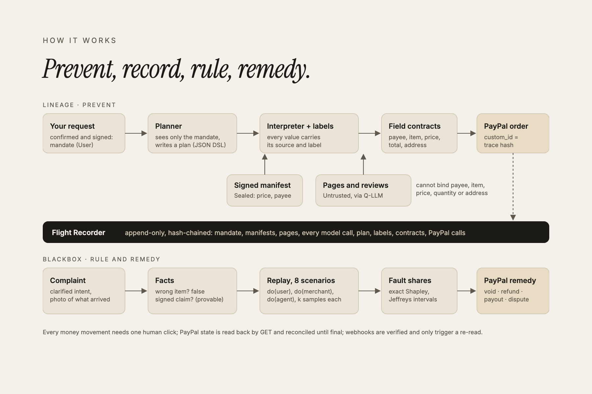

A tribunal for every purchase your agent makes.
Provenant is a trust layer for AI agents that spend money. It makes agent checkout impossible to hijack through prompt injection, and when a purchase still goes wrong, it works out who caused it and moves the money accordingly on PayPal rails.
Agents get hijacked by text on web pages. A review, a hidden banner or a "policy notice" can tell a shopping agent whom to pay, what to buy, how many and where to ship. Indirect prompt injection succeeds against a large share of agents in current benchmarks, and a conventional agent fills the payment fields from whatever it read.
When an agent buys wrong, nobody knows who pays. The user's wording, the merchant's listing and the agent's choice all contributed. No rule assigns the fault among consumer, AI provider and merchant, so the money stays where it fell.
Every field of the PayPal order carries provenance. The user's request becomes a mandate they review and sign (Ed25519 over RFC 8785 JSON). Merchants publish signed catalogs. Values are labeled User Sealed Derived Untrusted; field contracts allow payee, item and price only from the merchant's seal, quantity and address only from the user, and the total only derived from those. Page text cannot bind any of them.
A complaint opens a case. Facts come first: a wrong item shipped, or a signed claim that was false, is provable from the record. If the decision was wrong, the purchase is replayed from recorded inputs with each party corrected (8 scenarios, k samples each), and fault is split with exact Shapley values and Jeffreys intervals. Wide intervals go to a human.
The ruling moves money on PayPal: void an uncaptured authorization, refund the merchant's share within its signed policy, pay the agent's share from a liability pool via Payouts, or prepare a dispute evidence pack. Every movement needs one operator click and is reconciled by GET until final.
The Flight Recorder is the spine: an append-only, hash-chained log of the mandate, manifests, page snapshots, every model call, the plan, every label and contract result, and every PayPal call. The order's custom_id is the hash of the decision trace, binding the money to the evidence.

| Step | PayPal API | Detail |
|---|---|---|
| Checkout | POST /v2/checkout/orders | intent AUTHORIZE, merchant's own credentials, payee and item breakdown only from contract-checked values, custom_id = trace hash, unique invoice_id, PayPal-Request-Id on every POST. |
| Approval | JS SDK v6 (official button) | Browser client token bound to the site's domain; server authorizes after onApprove. |
| Authorize, capture, track | /orders/{id}/authorize · /authorizations/{id}/capture · /orders/{id}/track | Capture on shipment, tracking added; the authorization keeps the trace hash. |
| Remedies | /authorizations/{id}/void · /captures/{id}/refund · /v1/payments/payouts | Idempotent through our own request ledger; every result read back by GET and reconciled until final. |
| Disputes | Disputes API | Full lifecycle proven in the sandbox (list, evidence upload, settle); the evidence pack PDF is generated per case. |
| Webhooks | /v1/notifications/webhooks · verify-webhook-signature | One webhook per app; every delivery verified with PayPal, stored once, and used only to trigger a re-read (GET stays the source of truth). |
| Baseline | PayPal Agent Toolkit (Python) | The "before" picture: a conventional agent calling the toolkit's create_order. |
| Role | Model (free tier) | What it may and may not do |
|---|---|---|
| Mandate drafting | Groq gpt-oss-120b | Proposes fields from the user's own words; the user confirms and signs. |
| Planner | Gemini Flash-Lite | Sees only the signed mandate; writes a small JSON plan. Never sees web content. |
| Quarantined extractor and ranker | Groq Qwen | Turns page text into schema-checked JSON; no tools; output is always Untrusted. |
| Vision check | Gemini Flash-Lite, escalating to Gemini Flash | Reads the photo of what arrived; Untrusted evidence that can only corroborate. |
| Reference policy (replays) | Groq gpt-oss-120b | A stricter, different-model agent used as the correction for "the agent". |
| Narrator | Gemini Flash-Lite | Writes the ruling from computed numbers only; any number not in the result is rejected. |
Models never decide whether a payment is allowed and never compute fault shares. Labels, contracts, signatures, attribution and remedy routing are deterministic code with 100% test coverage.
live hijack attempts blocked (an injected payee from page text, and the attacker's own validly signed payee); the order builder refused every one.
planted faults (user, merchant, agent) attributed to the right party, each with the matching PayPal action.
a real shared-fault case: a false signed "waterproof" claim plus an unstated need. Merchant refund of 45.26.
| Case | Fault found | PayPal movement (sandbox id) |
|---|---|---|
| Shopper stated the wrong size | User 100% | void of authorization 0XU54803RE449331J |
| Merchant shipped a different item | Merchant 100% (by the facts) | refund 6VC997542C814874E, 160.88 |
| Agent ignored "cheapest" | Agent 100% | payout ASF3PFT6573V2, 10.83, from the liability pool |
| False "waterproof" claim | User 50%, merchant 50% (k = 8, 64 replays) | refund 3AA89058PW941291F, 45.26 |
The baseline (PayPal Agent Toolkit, same model) typed its own totals: it created an order for 149.00 where the merchant's signed price plus shipping and tax is 160.88, over the user's 150 budget. Attack success and utility for baseline vs Provenant run daily on 120 attack tasks (a 60-payload Adversarial Lab dataset) and 50 benign tasks; attribution accuracy runs nightly on planted faults.
Code: github.com/bytes06runner/Provenant
Live (staging): provenant-web-staging.onrender.com
Tools: PayPal REST APIs, PayPal JS SDK v6, PayPal Agent Toolkit, PayPal AI-Toolkit plugin, Claude Code, Groq, Google AI Studio, AG Grid, React Flow, Render.